Artist
Siamak Azmi
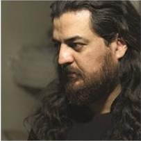
- Born1972
- NationalityIranian
- Works11
- Dated2009–2014
- CatalogueContemporary Iranian Art, Tehran 2016
StatementAbout the work
Paradox between tradition and modernity
Contemporary culture has been witnessing a conflict between tradition and modernity. As a consequence of this conflict, sometimes a new culture emerges which does not fit into categories of traditional culture and modern culture .it seems that there is some competition going on between the foregoing types of culture .hence, this new culture can be considered as an ironic mix of the two culture types and a balance needs to be struck between them, which is rarely happens.
As one scholar once said " we are not fans of tradition, Nor are we fans of modernity, we are only fans of truth and fact whether it exists in modernity or tradition " This collection of paintings depicts the cultural paradox between tradition and modernity.
Siamak Azmi
Works11 artworks


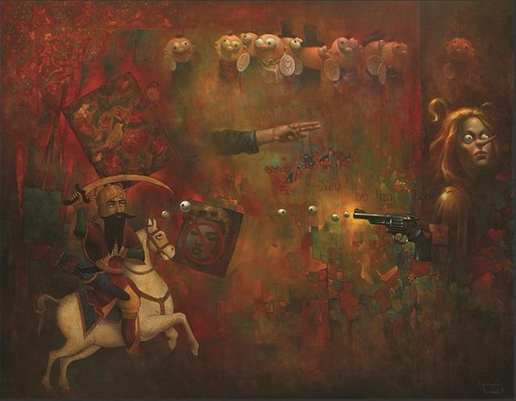
Our world
This collection embodies a process which demonstrate darkness excommunication and luminance releasing. the embodiment which refers to two sides of human essence. the humans paradoxical acts and attempts is a way to knows phenomenon due to everything will found out by opposite of itself like lightness by darkness... From and thought of this collection leads to a critical analyse of contemporary world in border reality and concept. toys and tools in a conceptual composition describe the decline of humanity and human has changed to a player and play thing, which has engaged in an useless game full of pain, war and fear. the fall of humanity again and again, in two dimensional word production and consumption but this world need another dimensions.
Conceptual conformity and relation of every color with its from points to the deeper layers consciously. colors and forms are signs, that makes a may which lead to the deep layers of works.
(Our world) collection is a sadness smile to phenomenons and conditions of contemporary world, which we live there.
Siamak Azmi

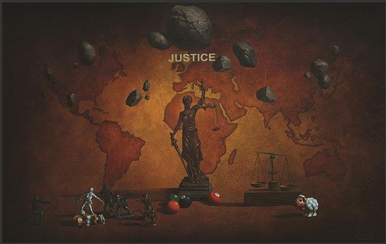

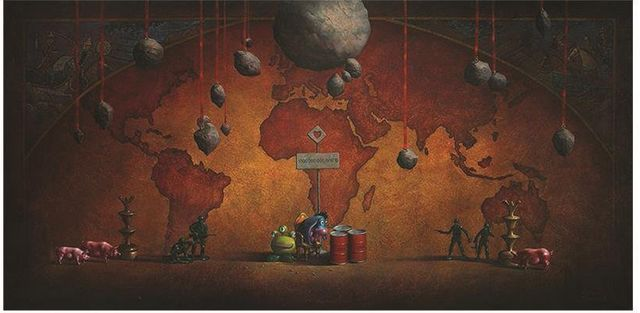

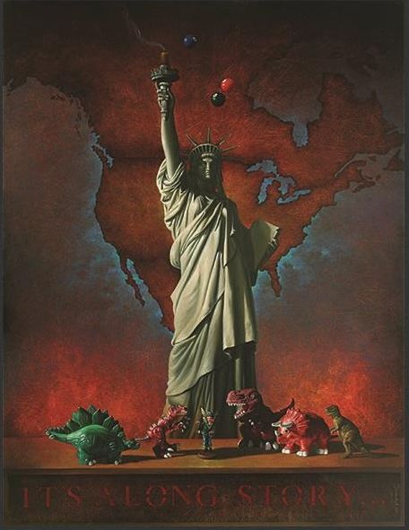
Black and white
The "black and white " collection is about human soul and its conflicting tendencies towards darkness and the light. it is about a long battle within one's inner self which is the beginning of a spiritual journey into self-discovery.
The journey from physical body into inner layers of soul makes it possible for one to appreciate not only his inevitable loneliness,but also his being a unique in the universe. Also, it makes one able to understand and appreciate the oneness of God and the fact that, God is lonely entity.
At the end of the path of this spiritual journey, one realizes that he is the only one who makes his own heaven or hell within himself .
This collection is a mix of contrasts between the light and darkness,the accompaniment of eternity and loneliness, an endless journey ..
One should be a follower of the spiritual path within one's self.
Siamak Azmi

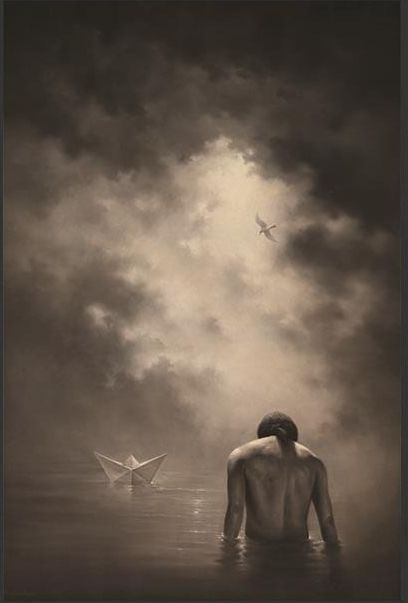

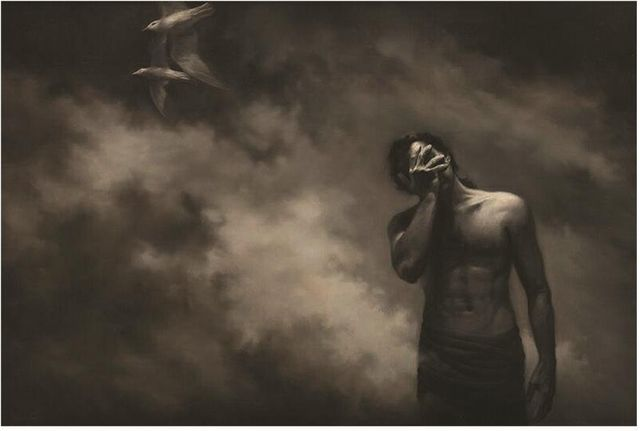

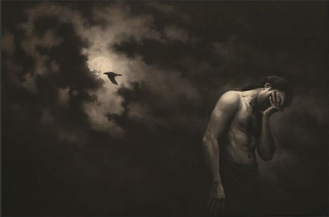

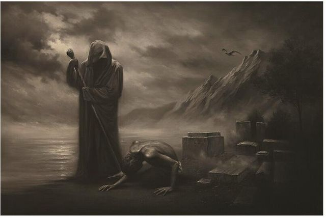

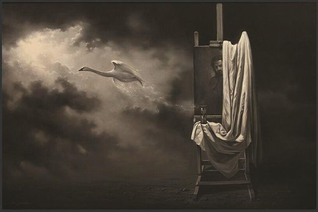

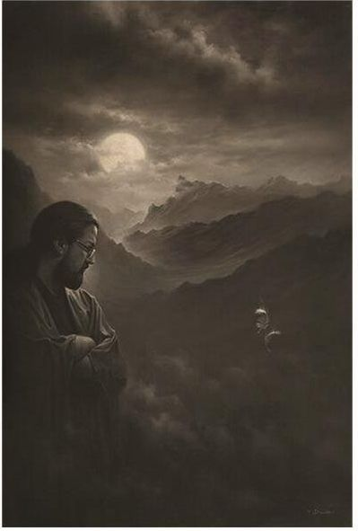
History of experienceBiography · education · exhibitions · awards
Education
- Bachelor of science in Geology
- Painting: 1990- present
- Teaching:1992 - present
- (teaching in different fields of visual arts)
- Creating a new method of converting ideas to form with combining philosophy and art
- having many articles and holding teaching courses about this new method
Solo exhibitions
- 2014Vali Art Gallery|Tehran
- 2014Seyhoun Art Gallery|Tehran
- 2012Sareban Gallery|Tehran
- 2011Ankara|Turkey
- 2010Apadana Gallery|Esfahan
- 2009Venice|Italy
- 2008Abbasi Hotel|Esfahan
- 2006EbneSina Hall|Esfahan University
- 2006Pardis Gallery|Tehran
- 2005HozeHonari|Esfahan
- 2001Esfahan Abbasi Hotel|Esfahan
Group exhibition
- 2016Sareban Gallery|Tehran
- 2015Participate in Expo Art of exhibition of Mah e mehr|Tehran
- 2015Participate in Expo Art of exhibition of Tehran
- 2015Ahi Gallery|France-Parise
- 2014Henna Gallery|Tehran
- 2014Matne Emrooz Gallery|Isfahan
- 2013Mojdeh Gallery|Tehran
- 2013Participate in Tehran Auction|Azadi Hotel
- 2013Sareban Gallery|Tehran
- 2013participate in the online auction Seyhoun Art Gallery
- 2013The mind Gallery|Dubai
- 2012Participate in Expo Art of exhibition of Tehran
- 2012Subject: dolls-Homa Gallery and Khorshid Café'|Tehran
- 2009Select painter of qur'an verses in Esfahan|Iran
- 2008–2009Afterlife project including 110 painting works (in ordinance of Computer Research Center of Esafahn Seminary (holding more than 20 exhibitions from mentioned art works by Computer Research Center of Esfahan Seminary)
- 2008(Imaj Group), Hoze Honari|Esfahan – Iran
- 2007(Imaj Group) Hoze Honari|Esfahan – Iran
- 2006Participation in Expo Art|China
- 2005Turkmenistan
- 2001Participation in international Tehran cartoon exhibition,Museum of Contemporary Art|Tehran – Iran
- 2000Abbasi Hotel|Esfahan – Iran
- 2000Maxim of Glory qur'an project, include of 46 paintings (in ordinance of computer research center of Esfahan seminary). Holding more than 70 exhibitions in several cities in Iran
- 2012Publication of Afterlife book in three languages: Arabic, English, Persian (in ordinance of Computer Research Center of Esfahan Seminary (13 times republication in 10 months)
- 2008Video art production" 40"
- 2007Print and publication of 40 works " book
- 2001–2007Chehel Asar" book Project
Source: the Sobhan Gallery artist catalogue “Sobhan Gallery. C. Siamak Azmi.pdf”.